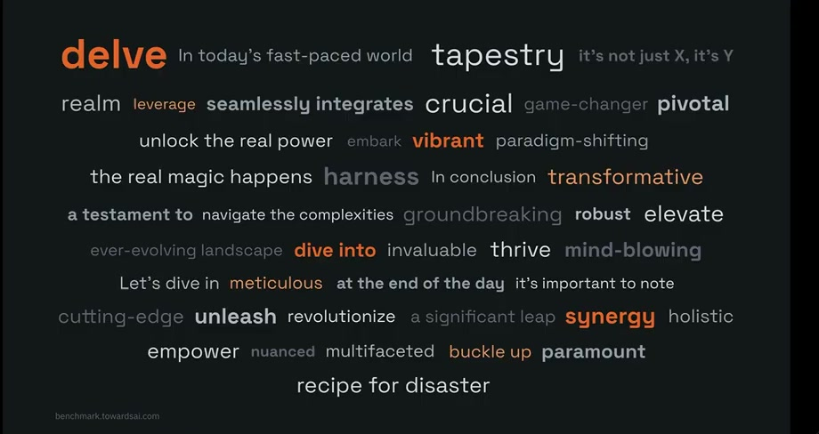
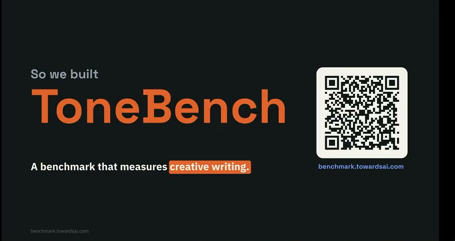
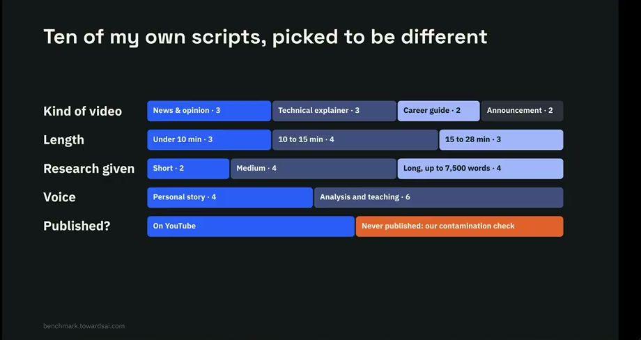
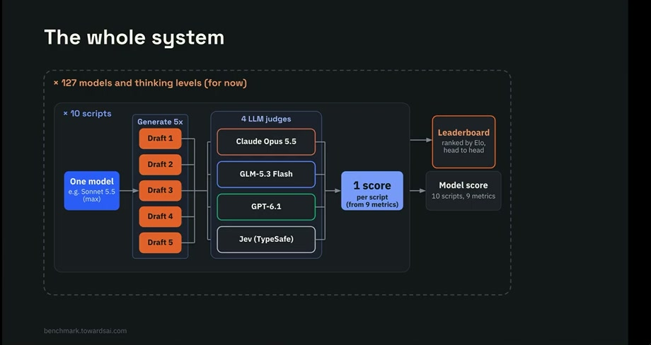
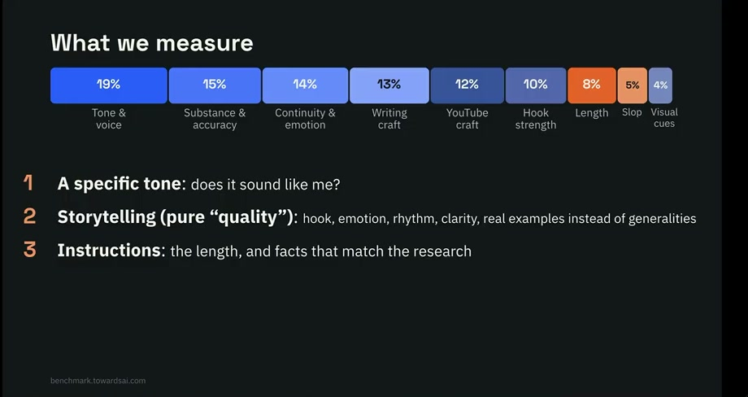
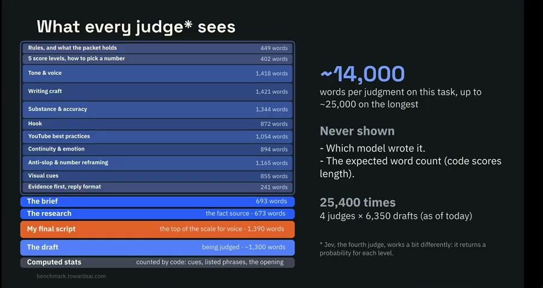
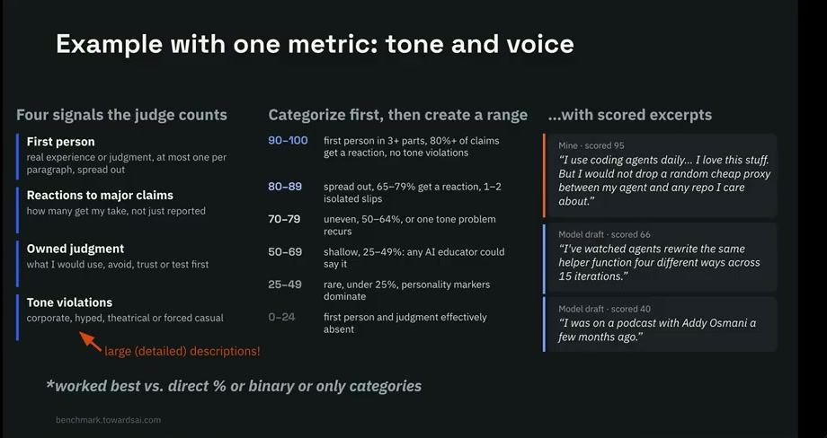
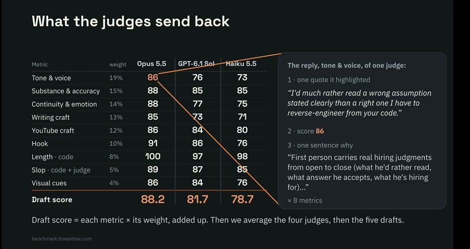
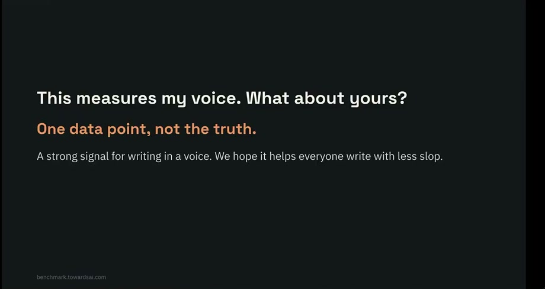

Slop is six things, and the worst is having no voice
Bouchard starts by defining what he wants to stop. Models keep improving and slop does not go away, so more training alone is not the fix. His slide lists six parts. Overused words that people rarely write and models write constantly. Being too general: "most teams", "most projects", nothing specific, which he admits to doing himself on LinkedIn. Saying nothing in pleasant words. Repeating itself. Hallucinating. And the wrong tone.
He calls the last one the worst. Generated text has no tone, or everyone's tone at once, and does not sound like the person it is supposed to be from. That sets the target: measure sloppy writing as a whole, not count slop words.

“it usually has the wrong tone, or at least it has no tone and like everyone's tone at the same time”00:00:00
- Slop is overused words, generality, emptiness, repetition, hallucination and wrong tone.
- Better models have not made it go away.
- The goal is to measure sloppy writing, not just flag words.
Evidence: transcript 00:00:00
The test: could I read this out loud without cringing?
He has a practical reason to care. Towards AI is a small team that produces a great deal of teaching material, uses AI to do it, and spends a lot of time fixing the results. The same team builds evaluation pipelines for clients.
The benchmark is openly subjective. It measures whether a model can write like him, defined as a script he could read aloud without cringing at words he would never use. Each model gets a brief and research and is asked for a complete video script that he could have written. He says that, of course, it never quite manages it.
The prompt is long. His slide breaks it down: a voice guide of 2,626 words, a storytelling guide of 3,243, a contract of hard requirements, the brief and the research. The output is one script of about 2,000 words. There are ten such tasks, built from his own scripts and chosen to differ in kind, length and voice. Some were never published, as a check on whether models have seen them.



“Obviously, that doesn't happen.”00:06:12
- The standard is personal: would he say this out loud as himself?
- Each model gets roughly 8,000 words of guidance for a 2,000-word script.
- Ten tasks from his own scripts, some unpublished to catch contamination.
Evidence: transcript 00:00:00, 00:06:12
One draft tells you nothing
Every model writes each script five times. The reason is variation within a single model, which he recommends checking in any evaluation, and especially for creative tasks. Some models produce one draft in five that is as good as the best model's, and four that are not.
His slide shows three cases on the same script. The top model's five drafts sit within a point of each other. A second model splits into two clusters and ranks fifth on its best drafts and 67th on its worst. A third is scattered. The weaker the model, the wider the spread. Five drafts was the compromise between seeing this and what it costs to run.
“the worse the model is, the widest the variance”00:06:12
- The same model on the same prompt can land far apart.
- A single good draft can hide an unreliable model.
- Weaker models vary more.
Evidence: transcript 00:06:12
Nine metrics, four judges, and every judge has a favourite lab
Quality is scored on nine metrics. He groups them as tone, storytelling craft, following instructions on length and format, accuracy against the research, and slop. On the slide, tone and voice carries the most weight at 19% and slop itself only 5%.
Each judge receives about 14,000 words: around a thousand words of instructions and examples per metric, his own script as the reference, and the research. Judges do not see which model wrote the draft, and length is scored by code. For tone, the judge first places the draft in one of six bands and then gives a score within it. He found that worked better than a direct percentage, a yes or no, or categories alone. Each score comes back with a justification and a quoted example.
With over a hundred models, five drafts and ten tasks, there are thousands of scripts, so the judging has to be automated. The problem is that judges have preferences, and some prefer their own family of models, not just themselves. His slide measures it. One lab's judge adds 2.3 points to its own lab's drafts and takes 2.8 off its main rival's; the rival's judge adds 3.9 to its own and takes 2.1 off the first. His advice is to judge with models from different families. His team has also compared a thousand pairs of excerpts by hand.




“Some models prefer themselves.”00:12:33
- Tone weighs most; the slop score is a small part.
- Band first, then score, with long descriptions of each band.
- AI judges favour their own lab, so use several from different families.
Evidence: transcript 00:06:12, 00:12:33 · watch the judge-bias slide
What it cost
The first cost was people: about 500 hours to prepare the scripts, define the rubrics, find examples and work out how to quantify quality. Then four months of his own iteration on the metrics and their weights, and thousands of dollars in model usage.
The running cost is what makes changes expensive. Altering one thing in the rubric means every draft has to be judged again, which he puts at more than two thousand dollars; the slide says $2,350. Changing a line in the writer's prompt means regenerating everything as well. His advice to anyone building something similar is to make those changes carefully.
“It would cost us more than two thousand dollars.”00:12:33
- About 500 hours of setup and four months of iteration.
- One rubric change costs over $2,000 to re-judge.
- A prompt change costs more, because every draft is regenerated.
Evidence: transcript 00:12:33
What it taught him about writing with AI
His main conclusion is not about which model writes the best single draft. Pick the one that gets you where you want to be with the least irritation, because none of them will be perfect soon. At scale that is a cheap open model, which he says is about fifty times cheaper than the top-ranked one. For the top model, the highest thinking setting costs two and a half times more than the one below it for the same result.
The rest is practice. Make the prompt long and detailed, with every example of what to do and what not to do, including whole pieces of your own writing. Have a second model review the draft against the same instructions and give feedback, once and no more than three times, or it loops back into slop. For volume, generate several drafts with a cheap model and have a stronger one pick and merge the best parts, which he expects to cost less than one draft from the best model. And a person still reviews the result.
He ends on a limit. The benchmark measures his voice. It is one data point and does not show that the top model is the best one. He suggests people build their own.

“You just want to find a model that will be the least annoying to you.”00:12:33
- Choose the model that needs the fewest edits, not the most impressive one.
- Long prompts, negative examples, one review pass, cheap drafts merged by a strong model.
- It measures one person's voice; build your own for yours.
Evidence: transcript 00:12:33